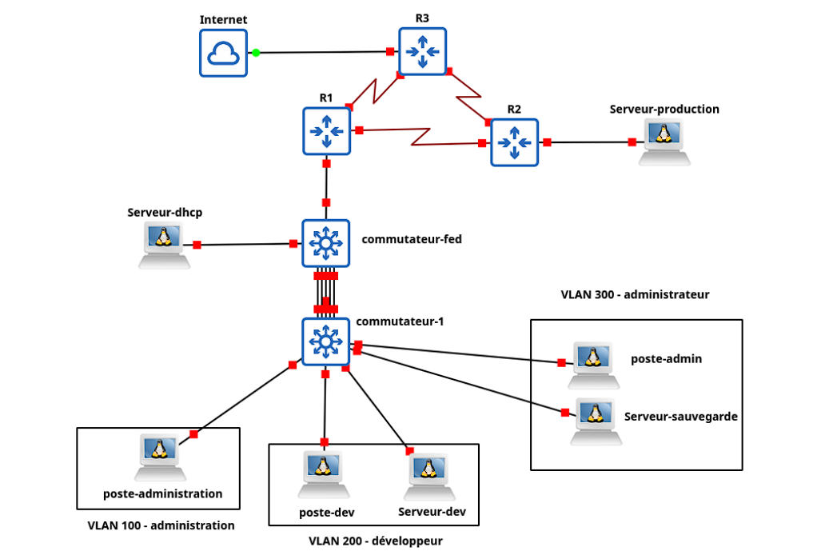

SAÉ 2.01
S'initier aux réseaux informatiques
Objectif
Concevoir et déployer une infrastructure réseau complète sous GNS3 intégrant des VLANs, du routage inter-VLAN, des services réseau (DHCP, FTP, Web) et des mécanismes de sécurité. Cette SAE permet de mettre en pratique l’administration et la sécurisation d’un réseau d’entreprise simulé.
Architecture réalisée
- Segmentation VLAN : création des VLAN 100, 200 et 300 pour séparer les services administration, développeurs et administrateurs. Mise en place du VLAN natif 999 tagué afin d’améliorer la sécurité du réseau.
- Routage inter-VLAN : configuration du routage inter-VLAN sur le commutateur commutateur-fed permettant la communication entre les différents VLANs sans utiliser de routeur dédié.
- Routage dynamique RIP v2 : mise en place du protocole RIP v2 entre les équipements de niveau 3 afin d’assurer l’échange automatique des routes dans le réseau.
- Services réseau : déploiement d’un serveur DHCP, d’un serveur FTP avec gestion des utilisateurs et d’un serveur Web Apache synchronisé via rsync entre le serveur de développement et le serveur de production.
Compétences développées
Configuration Cisco, conception réseau d’entreprise, segmentation, routage.
Compétences R&T mobilisées
- AC11.03 — Configurer les fonctions de base du réseau local.
- AC11.04 — Maîtriser les rôles et les principes fondamentaux des systèmes d’exploitation afin d’interagir avec ceux-ci pour la configuration et l'administration des réseaux et services fournis.
- AC13.01 — Utiliser un système informatique et ses outils.
Technologies
Preuve
